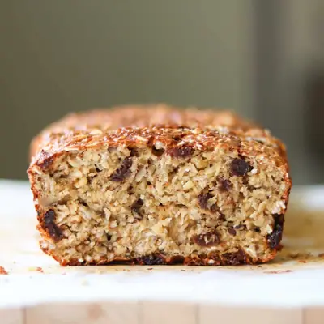

Cottage cheese bread

Ingredients
- 1 1/4 cups full fat cottage cheese (300g)
- 2 eggs
- 3 tablespoon olive oil (or avocado oil)
- 2 cups rolled oats (200g)
- 2 teaspoons baking powder
- 1/4 cup chopped walnuts
- 1/4 cup raisins
- 2 teaspoons chia seeds
- 1/4 teaspoon salt
Steps
- Preheat oven to 350°F (175°C). Lightly grease or line a 8x4 inch loaf pan with parchment paper.
- In a food processor, blend cottage cheese, eggs, and olive oil until smooth.
- Add oats, baking powder, salt, walnuts, raisins, and chia seeds. Pulse just until combined—don’t overmix!
- Pour the batter into the prepared loaf pan and smooth the top. The texture will be thick but don't worry!
- Bake for 35–40 minutes, or until golden brown and a toothpick inserted into the center comes out clean.
- Let cool before slicing. Enjoy warm
Recipe by Min Kwon · Kidfriendly Meals, from MJ and Hungryman. Saved here for personal use; the original has the full notes, tips and photos. Open original